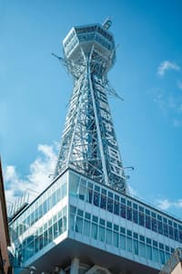
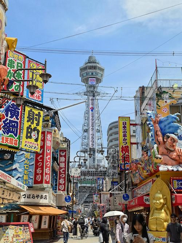
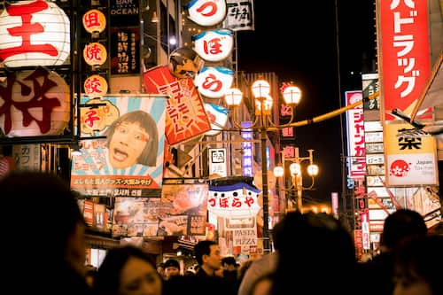
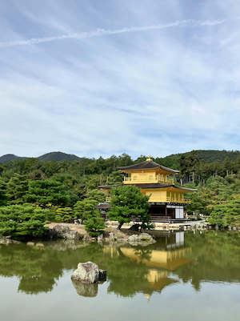
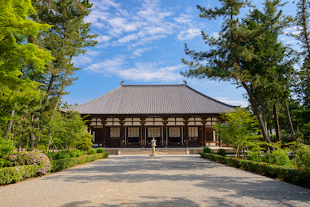

永和盛 株式会社
深受客人好评！
大阪・京都・奈良
员工精心策划的推荐观光路线
👇 点击各张图片查看详细路线！
大阪

精通英语的中山先生
京都
精通韩语的金先生

奈良

中国出生、日本长大的王先生
one day in
大阪
9:00 接车
（酒店・指定地点）
（酒店・指定地点）
9:30 - 11:30 大阪城公园
 绚烂豪华！秀吉的黄金世界。
绚烂豪华！秀吉的黄金世界。


热闹浪速的象征！
11:30 - 14:30 通天阁＆新世界
14:30 ～ 15:00 四天王寺
 日本佛法最初的官寺
日本佛法最初的官寺
 附设咖啡馆，悠闲小憩。
附设咖啡馆，悠闲小憩。
15:30 - 17:30 海游馆
18:00 - 19:00 道顿堀＆心斋桥

大阪真是太棒啦！19:00~ 送回酒店
（也推荐就地解散，尽情欣赏夜景）
欢迎来到大阪！
我会为您介绍“只有当地人才知道、不用排队的隐藏美食”。
并以避开拥堵的最佳路线为您导览。
我会为您介绍“只有当地人才知道、不用排队的隐藏美食”。
并以避开拥堵的最佳路线为您导览。
one day in
京都
9:00～10:30 会合后
前往京都
前往京都

 也推荐和服体验！
也推荐和服体验！乘高级轿车移动轻松～
10:30-12:00 伏见稻荷大社
12:20-15:00 清水寺

 二年坂・产宁坂
二年坂・产宁坂有很多可爱的小店～

无论看多少次，这种存在感果然都很震撼！
15:40-16:40 金阁寺
17:20-18:00 祇园＆花见小路

 购物和美食都很丰富！
购物和美食都很丰富！
18:00~ 前往大阪
清晨的京都也非常推荐！
避开拥挤，可以悠闲地观光。
请务必使用便捷的高级轿车服务！
避开拥挤，可以悠闲地观光。
请务必使用便捷的高级轿车服务！
one day in
奈良
9:00 接车
（酒店・指定地点）
（酒店・指定地点）


静谧的时光在此流淌……
10:00-11:00 唐招提寺
11:30-15:30
奈良公园＆东大寺
奈良公园＆东大寺

好吃的店也有很多！
 喂鹿饼干的时候
喂鹿饼干的时候要小心哦！
15:40-16:30 春日大社
 可一览奈良市内全景
可一览奈良市内全景
17:00-17:40 若草山
19:00~ 抵达大阪酒店
上午（奈良）下午（宇治）
一天内尽享“大佛・鹿・抹茶”，
这条关西『精华尽收』路线也大受欢迎！
请务必前来咨询。
一天内尽享“大佛・鹿・抹茶”，
这条关西『精华尽收』路线也大受欢迎！
请务必前来咨询。

Contact Us
咨询请由此处